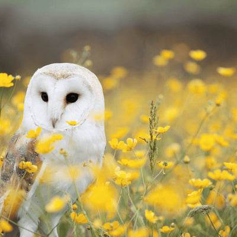
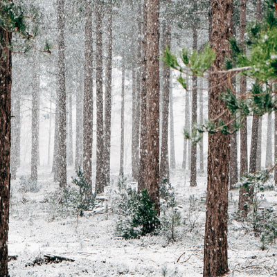

WHY ARE TREES IMPORTANT TO THE ENVIRONMENT?
Trees help clean the air we breathe,filter the water we
drink,and provide habitat to over 80% of the world's terrestrial biodiversity.
Forests provide jobs to over 1.6 billion people, absorb harmful carbon from the atmosphere, and are
key ingredients in 25% of all medicines.
Have you ever taken an Aspirin? It comes from the bark
of
a tree!
Here are the six pillars that explain why trees are vital:
AIR
Trees help to
clean the air we breathe.Through their leaves and bark, they absorb harmful pollutants and
release clean oxygen for us to breathe. In urban environments,
trees absorb pollutant gases like nitrogen oxides, ozone, and carbon monoxide, and sweep up
particles like dust and smoke. Increasing levels of carbon dioxide caused by deforestation
and
fossil fuel combustion trap heat in the atmosphere. Healthy, strong trees act as carbon
sinks,
offset carbon and reducing the effects of climate change.
WATER
Trees play a key role in
capturing rainwater and reducing the risk of natural disasters like floods and landslides.
Their intricate root systems act like filters, removing pollutants and slowing down the
water’s absorption into the soil. This process prevents harmful waterslide erosion and
reduces the risk of over-saturation and flooding. According to the UN Food and Agriculture
Association, a mature evergreen tree can intercept more than 15,000 litres of water every
year.

BIODIVERSITY
A single tree
can be home to hundreds of species of insect, fungi, moss, mammals, and plants. Depending on
the kind of food and shelter they need, different forest animals require different types of
habitat. Without trees, forest creatures would have nowhere to call home.
-
Young, Open Forests: These forests occur as a result of
fires or logging.
Shrubs, grasses, and young trees attract animals like black bears, the American goldfinch,
and bluebirds in North America.
- Middle-Aged Forests: In
middle-aged forests, taller trees begin to outgrow weaker trees and vegetation. An open
canopy allows for the growth of ground vegetation prefered by animals like salamanders, elk,
and tree frogs.
- Older Forests: With large
trees, a complex canopy, and a highly developed understory of vegetation, old forests
provide habitat for an array of animals, including bats, squirrels, and many birds.
SOCIAL IMPACT
From arborists
to loggers and researchers, the job opportunities provided by the forestry industry are
endless. We don’t just rely on trees for work, though. Sustainable tree farming provides
timber to build homes and shelters, and wood to burn for cooking and heating. Food-producing
trees provide fruit, nuts, berries, and leaves for consumption by both humans and animals,
and pack a powerful nutritional punch.
HEALTH
Did you know that
hospital patients with rooms overlooking trees recover faster than those without the same
view? It’s impossible to ignore that feeling of elation you get while walking through a
calm, quiet forest. Trees help reduce stress and anxiety, and allow us to reconnect with
nature. In addition, shade provided by tree coverage helps protect our skin from the
ever-increasing harshness of the sun.
CLIMATE
Trees help cool the planet by sucking in and storing harmful greenhouse gases like carbon dioxide intot their trunks, branches, and leaves — and releasing oxygen back into the atmosphere. In cities, trees can reduce ambient temperatures by up to 8° Celsius. With more than 50% of the world’s population living in cities — a number expected to increase to 66% by the year 2050 — pollution and overheating are becoming a real threat. Fortunately, a mature tree can absorb an average of 22lbs of carbon dioxide per year, making cities a healthier, safer place to live.
